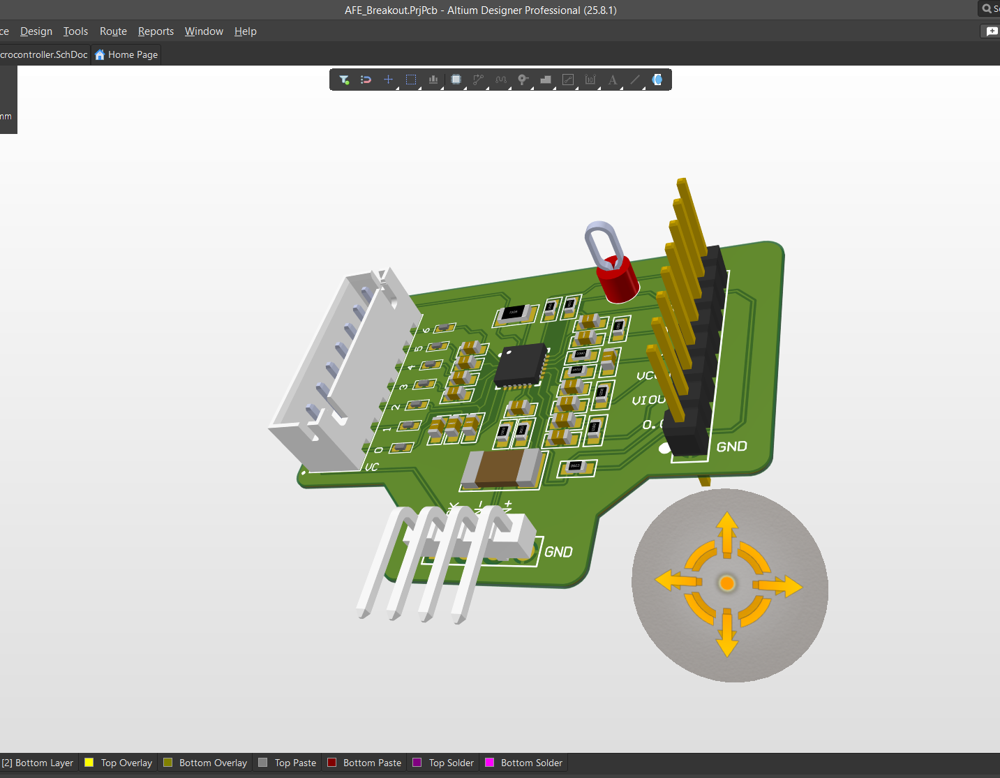

View Photos
Analog Frontend Breakout Board
- Performed IC selection referencing datasheets.
- Designed thermistor biasing networks.
- Modified typical application circuits for testability.
- Added auxiliary circuits with DNP resistors and test points.